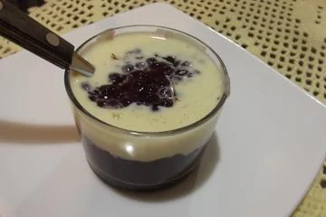
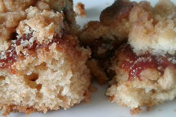

Ambrosia
Ingredientes
1 litro de leite
2 xícaras de açúcar
6 ovos inteiros
1 casca de canela
4 cravos-da-índia
suco de 1 limão pequeno
Modo de preparo
1- Coloque em uma panela média 1/2 xícara de açúcar, a canela e os cravos da índia.
2- Deixe ferver até dourar o açúcar (cor de caramelo).
3- Acrescente o leite, o suco do limão o restante do açúcar e os ovos ( misture os ovos antes para estourar as gemas)
4- Mexa de vez em quando, com cuidado.
5- Depois deixe ferver até ficar quase seca.
Site de retirada da receitaSagu de vinho com creme
Ingredientes
2 xícaras de sagu
3 copos grandes de vinho tinto
1 xícara e 1/2 de açúcar
1 litro de água
1/2 litro de leite
1/2 xícara de açúcar
2 colheres de amido de milho bem cheias
1 gema passada na peneira
1 colher de café de essência de baunilha
Modo de preparo
1- Coloque o sagu em uma panela de pressão com água e deixe cozinhar por 10 minutos.
2- Espere a panela esfriar, retire o sagu e lave em água corrente até sair toda a liga.
3- Coloque o açucar na panela junto com o vinho e o sagu já lavado deixe ferver uns minutos para encorpar.
4- Para o creme acrescente todos os ingredientes na panela misture bem, ligue o fogo e mexa até engrossar.
5- Pode variar de acordo com o gosto, acrescentando mais ou menos açúcar
6- Pode servir o sagu colocando o creme de baunilha como acompanhamento.
7- Sugestão: no inverno é muito gostoso comer esse sagu quente.
Site de retirada da receitaCuca de goiabada
Ingredientes
2 ovos
8 colheres (sopa) de açúcar
2 colheres (sopa) de manteiga
2 colheres (sopa) fermento biológico
2 xícaras (270 g) de farinha de trigo
1 xícara (220 ml) de leite
1 pitada de Sal
450 g de goiabada cortada em fatias (aproximadamente 1 pacote e meio)
6 colheres (sopa) de açúcar
6 colheres (sopa) de farinha de trigo
4 colheres (sopa) de margarina
1 colheres (sobremesa) de açúcar de baunilha (opcional)
Modo de preparo
1- Misture os ovos,o açúcar e o sal como se fosse uma gemada.
2- Adicione a margarina e misture da mesma forma até diluir por completo.
3- Depois, acrescente a farinha de trigo (peneirada), o fermento, o leite e mexa bastante, até que a mistura da massa fique homogênea.
4- Unte uma forma retangular (margarina e farinha de trigo), despeje a massa e coloque as fatias de goiabada em cima da mesma.
5- Misture todos os ingredientes com as mãos até formar uma farofa
6- Espalhe por cima da goiabada dispostas sobre a massa.
7- Deixe descansar por 30 minutos ou enquanto estiver fazendo a farofa (sugestão) e leve ao forno preaquecido (15 minutos) a temperatura de 200° C por 25 a 30 minutos (dependendo do seu forno).
Site de retirada da receita